化解语言模型计算最优 scaling 的分歧
Tomer Porian∗，Mitchell Wortsman†，Jenia Jitsev‡，Ludwig Schmidt†，Yair Carmon∗
arXiv:2406.19146v4 [cs.LG]，2025 年 1 月 19 日。
摘要
Kaplan 等 [30] 和 Hoffmann 等 [25] 提出了具有影响力的 scaling laws，用计算预算预测最优模型规模，但这些规律给出明显不同的预测。我们在 OpenWebText2 和 RefinedWeb 两个数据集上复现 Kaplan 等的 scaling law，并识别造成差异的三个因素，从而解释这一分歧：最后一层的计算成本、warmup 时长，以及随规模变化的优化器调参。纠正这些因素后，结果与 Hoffmann 等（即“Chinchilla”）的 scaling law 极为吻合。与 Hoffmann 等 [25] 所暗示的一个假设相反，我们发现，精心设计学习率衰减并非他们的 scaling law 成立的必要条件。作为次要结果，我们推导了最优学习率与 batch size 的 scaling laws，并发现，在较小 batch size 下，调节 AdamW 的 \(\beta_2\) 参数至关重要。
1 引言
我们考虑计算最优语言模型训练问题：给定计算预算 \(C\)，希望预测怎样在模型规模（参数数）与数据集规模（token 数）之间最优分配。随着预训练预算不断增加，计算最优 scaling 是一个极其重要的问题。在开创性工作中，Kaplan 等 [30] 提出 scaling law，预测最优 token／参数比随 \(C\) 的幂衰减。这一规律影响了 GPT-3 及后续多个模型 [12, 51, 43, 32, 47, 62, 52] 的规模选择。然而，Hoffmann 等 [25] 质疑其有效性，认为最优 token／参数比应近似独立于 \(C\)，当时模型相对于训练 token 数拥有过多参数。基于这一预测，他们训练了名为 Chinchilla 的 67B 参数模型，以类似计算预算胜过更大模型。
虽然 Hoffmann 等 [25] 及后续工作 [55, 56, 17, 26, 15] 已确立：遵循 Hoffmann 等的规律优于 Kaplan 等的 scaling，但理解两项工作为何得出不同结论仍然重要。差异来自架构、训练设置、预训练数据、结果分析，还是完全不同的因素？答案可能为如何正确预测和开展模型 scaling 提供重要经验。
Hoffmann 等 [25] 假设，分歧来自 Kaplan 等 [30] 没有针对每个 token 预算分别定制学习率调度。他们证明不匹配的学习率衰减会导致更高损失，但并未证明这会造成不同的计算最优 scaling law。附录 A 进一步讨论 Hoffmann 等 [25] 的假设。据我们所知，这是迄今文献中唯一提出的解释。
我们的贡献。本工作揭示造成分歧的三个因素，并反驳 Hoffmann 等关于学习率衰减作用的假设；图 1 展示主要结果（接下页）。
∗Tel Aviv University；通信作者邮箱：tomerpor@gmail.com 和 ycarmon@tauex.tau.ac.il。
†University of Washington。
‡Jülich Supercomputing Centre（JSC）及 LAION。
第 38 届神经信息处理系统大会（NeurIPS 2024）。
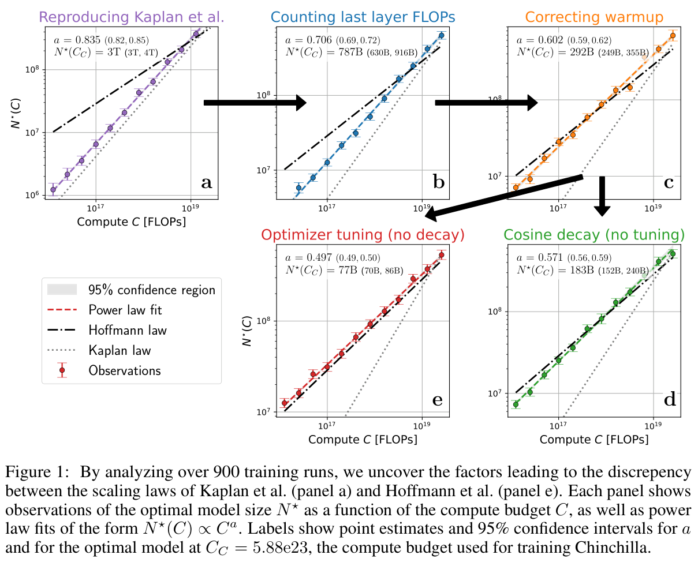
（承上页）首先，我们使用 OpenLM 库 [21] 和 RefinedWeb 数据集 [41]，在源自 Llama 的预训练设置中复现 Kaplan 等的 scaling law（图 1a）。第一个观察是，将 decoding 层的计算成本计入（Hoffmann 等 [25] 这样做了，而 Kaplan 等 [30] 没有），会使计算最优 scaling 向更恒定的 token／参数比移动（图 1b）。其次，Kaplan 等 [30] 使用的固定长度 warmup 对小模型过长，夸大了低计算预算下的最优 token 数；使 warmup 时长随模型规模变化，会进一步使 scaling 朝 Hoffmann 等方向移动（图 1c）。接着，我们使学习率衰减与每个被测试配置的 token 预算匹配（Hoffmann 等 [25] 猜测这是必要的），却观察到其对计算最优 scaling law 影响很小（图 1d）。最后，针对每个模型规模单独设置学习率、batch size 和 AdamW 的 \(\beta_2\) 参数，得到与 Hoffmann 等非常一致的计算最优 scaling（图 1e）。值得关注的是，后一个配置使用恒定学习率调度，表明 Hoffmann 等的 scaling law 出现并不需要学习率衰减。我们在 OpenWebText2 数据集 [18] 上重复实验，即使只在 RefinedWeb 上调参，也观察到类似结果。
我们补充以下分析：
- 在实验最后阶段（图 1e），为每个模型规模选择不同超参数。为此，对小规模模型开展超参数扫描，用结果拟合最优 batch size 和学习率作为模型参数量函数的幂律。这一方法受到 DeepSeek [15] 启发，我们的超参数 scaling laws 与其大致吻合。但我们观察到，小 batch size（128 及以下）下，将 AdamW 的 \(\beta_2\) 设为 0.95 并非最优；增大它才能从小规模超参数扫描中确立清晰趋势。
- 我们研究最优损失如何随计算预算缩放。我们表明，为解决 Kaplan 等／Hoffmann 等分歧所采取的步骤（即缩短 warmup，以及使学习率和 batch size 随规模变化），在小规模时显著降低损失，但在大规模时改善有限。相反，引入余弦学习率衰减调度（接下页）。
（承上页）会显著降低损失，而且收益在大规模时仍然存在。与 Hoffmann 等 [25] 类似，我们在最优损失曲线上观察到一些曲率。尽管如此，调过超参数后的最优损失，与饱和幂律相当一致。
- 我们计算每个实验的计算成本，并绘制纳入更大训练运行时预测质量如何改善。超参数扫描的成本与一次 scaling law 拟合实验相当，但使用恒定学习率代替余弦调度所节省的计算量，大致可以抵消这一成本。
代码与数据发布。为方便后续研究，我们在 https://github.com/formll/resolving-scaling-law-discrepancies 分享复现分析与插图所需的数据和代码。此外，训练模型的 checkpoint 位于 https://huggingface.co/formll/resolving-scaling-law-discrepancies。
2 预备知识与实验设计
2.1 记号与问题设置
我们在 \(D\) 个数据 token 上（基本不重复）训练大小为 \(N\) 的语言模型。\(N\) 的精确定义在本文中很重要：除非另有说明，\(N\) 表示模型所有线性层的参数数量。也就是说，\(N\) 不含 embedding 层，但包含模型的 head：最后一个产生预测 token logits 的线性层。（所训练模型的 embeddings 和 head 不共享权重。）
设 \(\mathrm{FLOPs}(N,D)\) 为训练规模 \(N\) 的模型、使用 \(D\) 个 token 所需的浮点运算量。全文采用近似：
\[\mathrm{FLOPs}(N,D)\approx6ND.\qquad\text{(1)}\]
第 3.1、3.2 节比较我们与 Kaplan 等 [30] 对 \(N\) 的定义。附录 B 还讨论计入 attention FLOPs 的影响，以及其他工作估计 FLOPs 的方式。
设 \(L(N,D)\) 为规模 \(N\) 的模型训练 \(D\) 个 token 后得到的对数损失（对训练数据分布及训练过程所有随机性取期望）4。假定固定计算预算 \(C\)，我们旨在预测：
\[N^\star(C):=\operatorname*{argmin}_{N>0}L\left(N,\frac{C}{6N}\right)\approx\operatorname*{argmin}_{N>0}\min_{D:\mathrm{FLOPs}(N,D)=C}L(N,D),\qquad\text{(2)}\]
即在近似（1）下，用计算预算 \(C\) 训练时损失最小的模型规模。
还令
\[D^\star(C):=\frac{C}{6N^\star(C)},\qquad\rho^\star(C):=\frac{D^\star(C)}{N^\star(C)}=\frac{C}{6[N^\star(C)]^2},\qquad\text{(3)}\]
分别表示最优 token 数与最优 token／参数比。为预测这些量，采用如下幂律：
\[N^\star(C)\approx N_0^\star C^a,\quad D^\star(C)\approx D_0^\star C^b,\quad\rho^\star(C)\approx\rho_0^\star C^r,\qquad\text{(4)}\]
并按下述方式，用数据拟合指数 \(a,b,r\) 及系数 \(N_0^\star,D_0^\star,\rho_0^\star\)。
2.2 训练设置
使用 OpenLM [21] 训练仅含 decoder 的 Transformer 语言模型，它整合了 Llama [55, 56] 及后续工作中的许多架构和训练进展。初始训练配置主要基于 Gadre 等 [17] 的超参数搜索。我们的设置没有复刻 Kaplan 等 [30]，但匹配或近似匹配了若干关键超参数，详见第 3 节。设置及所选超参数的详细描述见附录 C。
4此记号抽象掉了如下事实：同一规模 \(N\) 可以对应许多不同模型，训练 \(D\) 个 token 也有许多方式。理想情况下，\(L(N,D)\) 代表大小为 \(N\) 的最优架构，使用最佳训练方法、训练 \(D\) 个 token 所达到的损失。实际中，每个 \((N,D)\) 只考虑单个配置，但该配置源自架构搜索和优化器调参，或直接进行，或间接建立在先前工作上。
模型集合。在含 16 个模型的集合上搜索计算最优模型，规模从 5M 到 901M。根据 Kaplan 等 [30] 建议，选择模型层数 \(l\) 和宽度 \(d\)，使 \(N\) 按约 \(\sqrt2\) 的倍数递增，同时纵横比 \(d/l\) 保持在 32 至 64。每种配置使用 4 个 attention 头，因为初步实验表明这对小模型最优，增加头数也未明显改善大模型。附录表 2 列出网格中全部模型。
数据。实验使用 OpenWebText2 [18]，约含 30B 个来自 Reddit 的 token，类似 Kaplan 等 [30] 使用的 WebText2；还使用 RefinedWeb [41]，约含 600B 个来自 CommonCrawl [1] 的 token，类似 Hoffmann 等 [25] 数据混合中占约一半的 MassiveWeb 数据集。
评估与 FLOP 网格。使用从训练数据中留出的 160M token 评估模型。当 \(6N\) 与已见训练 token 数 \(D\) 的乘积跨过 FLOP 网格 \(\{1.25\mathrm{e}16\cdot2^i\}_{i=0}^{11}\) 中某个元素时执行评估。该网格在数据分析中起核心作用。此外，每 20 步记录平均训练损失。
2.3 数据分析
估计计算最优幂律的技术类似 Hoffmann 等 [25] 的第二种（基于 IsoFLOP）方法，但在若干细节上不同。方法包含两步：对 FLOPs 网格中所有 \(C_i\) 直接估计 \(N^\star(C_i)\)，再对这些估计拟合幂律。下面概述两步，完整细节见附录 D。
估计 \(N^\star(C_i)\)。对于每个 \(C_i\)，将集合（表 2）中若干模型训练 \(C_i\) FLOPs，提取损失与模型规模关系的 IsoFLOP 曲线（见图 10）。对于没有验证损失的 FLOP 值（具体为第 3.1 节及附录 B），改用平滑训练损失。采用加入噪声再插值的流程估计 \(N^\star(C_i)\) 及不确定性，基于具有经验校准幅度的高斯噪声和 Akima 插值 [3]。对每个 \(C_i\)，得到一组最优规模估计的“bootstrap 样本”；其中位数作为 \(N^\star(C_i)\) 的点估计。该流程还给出 \(N^\star(C_i)\) 在对数尺度上的标准差估计（图 1 误差条）。
拟合幂律。在对数空间执行加权线性回归，拟合式（4）的幂律，权重反比于上面计算的对数空间标准差的平方（即对数空间中的高斯最大似然估计）。要得到幂律参数点估计，就拟合各 \(N^\star(C_i)\) 的点估计。为量化不确定性，对 bootstrap 样本拟合幂律，得到一组 \(N_0^\star,a,N^\star(\cdot)\) 样本，并从分位数构建置信区间。
3 主要结果：解决 scaling law 分歧
本节详细描述主要结果，图 1 可视化，表 1 汇总，附录 E 详细绘图。以下小节依次对应图 1 各子图。
3.1 复现 Kaplan 等的 scaling law
为复现 Kaplan 等的规律，在 batch size（\(2^{19}\) token）和学习率调度（先 warmup \(3000\cdot2^{19}\approx1.57\mathrm{B}\) token，再余弦衰减，于 \(2.5\mathrm{e}5\cdot2^{19}\approx131\mathrm{B}\) token 时至零）方面与 [30] 一致。其他配置并不完全一致，但所训练模型覆盖的规模和计算量范围与 Kaplan 等 [30] 类似。仅在这一复现实验中，也把“模型规模”\(N\) 定义为除 head（最后一个 decoding 层）外所有线性层的参数数。即对于宽度 \(d\)、词表大小 \(v\) 的模型，从通常的 \(N\) 定义中减去 \(d\cdot v\)（见表 2 最后一列）。
图 1a 显示，这一设置得到的计算最优指数 \(a\) 和幂律拟合，接近 Kaplan 等 [30，图 14 左图] 的幂律 \(1.6\mathrm{e}9(C/8.64\mathrm{e}19)^{0.88}\)。
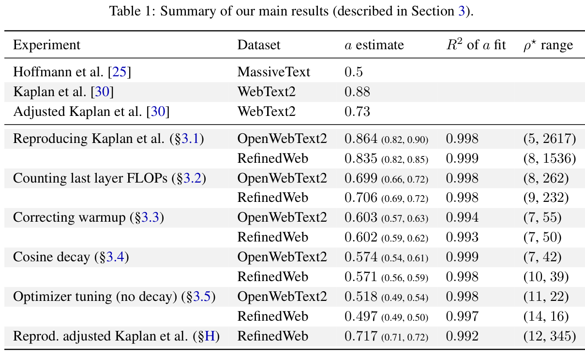
3.2 计入最后一层 FLOPs
Kaplan 等 [30] 选择定义模型规模时不计 embedding 参数，因为发现这让无限计算量情形下的 scaling laws 在不同网络深度间更一致 [30，图 6]。可能由于其模型 head 与 embeddings 共享权重，他们也未计入 head 对每 token FLOPs 的贡献 [30，表 1 最后一行]。然而，表 2 显示，忽略 head 所造成的低估，会随模型变小而平滑增加，从较大模型的约 10% 增至较小模型的约 90%。因此，计入 head FLOPs（即采用我们的 \(N\) 定义），会使近似显著更准确。图 1b 显示，改用我们的模型规模统计，也使指数 \(a\) 降低超过 0.1，更接近 Hoffmann 等，但仍未完全一致。
3.3 纠正学习率 warmup
接下来处理学习率 warmup 时长。Kaplan 等 [30] 将其设为完整训练时长的一定比例，而完整训练旨在完全收敛。图 2 左图表明，warmup 过长：对于较小规模模型，随计算量变化的最优 token 数小于或接近 warmup token 数，因此这些模型没有得到最优训练。Kaplan 等 [30] 的图 14 右图也显示同一问题：许多计算预算下，最优步数低于或接近固定为 3000 的 warmup 步数。图 2 左图还直观解释了 \(a\) 偏大的原因：在较小计算规模，模型被“迫使”使用比本来最优值更多的训练 token，才能“逃离”漫长 warmup。逃离之后，最优 token 数仅缓慢增长，因而最优模型规模快速增加，产生较大指数。
发现问题后，我们提出一个简单启发式，更合理地选择 warmup 时长：对每个模型，将 warmup token 数设为模型规模 \(N\)。附录 F 验证这一启发式。图 2b 底部展示新 warmup 选择的有效性：最优 token 数总至少为相应规模模型的（插值得到的）warmup 时长的 5 倍。从该图及图 1c 可见，缩短 warmup 会进一步使规律朝 Hoffmann 等方向移动，得到约 0.6 的指数 \(a\)。
3.4 学习率衰减对计算最优分配影响有限
纠正学习率 warmup 后，我们研究学习率衰减；Hoffmann 等 [25] 猜测，这是他们与 Kaplan 等 [30] 结果差异的主要原因。我们（接下页）。
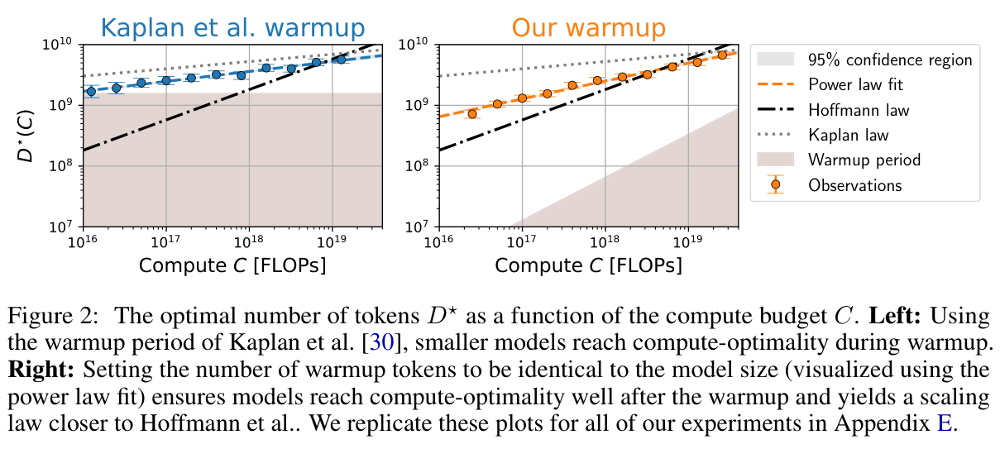
（承上页）观察到，Kaplan 等 [30] 为完全收敛而设计的长达 131B token 的衰减阶段，意味着其受计算限制的实验几乎没有经历学习率衰减：图 2 表明，在我们的计算规模下，训练超过 10B token 从不最优，这在余弦调度中仅对应不到 1.5% 的衰减。
为纠正这一点，我们采用 Hoffmann 等 [25] 的第二种方法，为每个模型和 FLOP 预算单独选择学习率调度。对网格中每个 FLOP 值，选择表 2 中产生 1 至 100 token／参数比的 7 个模型，使用在到达目标 FLOP 值时衰减至最大学习率 1% 的余弦调度训练5。这约为先前实验两倍的成本，先前每个模型规模只需一次训练（进一步讨论见第 4.2 节）。图 1d 显示，加入余弦衰减得到略清晰的线性趋势（\(R^2\) 从 0.993 增至 0.998），指数略接近 Hoffmann 等的规律（从 0.6 变为 0.57），但大部分差距仍在。因此，即使纠正 FLOP 统计和 warmup 问题，加入学习率衰减仍不足以复现 Hoffmann 等的 scaling law。
3.5 纠正 batch size、学习率和 \(\beta_2\)
造成 Kaplan 等／Hoffmann 等分歧的最后一个因素是优化超参数选择，特别是 batch size：固定 batch size 为 \(2^{19}\) token 时，较小规模的计算最优模型仅训练数百步，很可能太少。Kaplan 等 [30] 注意到这一问题，并尝试基于大 batch 训练的经验模型 [36] 作后处理来纠正；本节末尾再回到这一结果。
这里采取更直接的方式，为每个模型规模预测近似最优超参数6。因为改变 batch size 往往也需要重新调节学习率 [19, 36, 49, 61]，我们对 5M 至 108M 模型同时扫描两者，并在 220M 模型上额外扫描验证。最初保持 \(\beta_2=0.95\)，但在小 batch size 下结果较差：batch size 越小，平方 gradient 越嘈杂，AdamW 需要更多平滑才能得到正确分母。因此，扫描加入 0.99 和 0.999，改善了小 batch size 的性能。这一经验观察与 Zhang 等 [63] 的理论工作一致：batch size 较小时，更高的 \(\beta_2\) 对 Adam 收敛至关重要。附录 G 完整描述参数扫描，在最大模型上验证所给超参数的最优性，并进一步讨论 \(\beta_2\) 的作用。
图 3 绘制了每个模型规模最优 batch size 与学习率的估计，显示出清晰趋势，我们用参数量 \(N\) 的幂律拟合。观察到对邻近 \(N\) 值的良好外推后（接下页）。
5warmup 时长设为模型规模 \(N\) 与总 token 预算的 20% 二者中的较小值。附录 F 消融最终学习率。
6更准确地说，是预测每个模型规模按每参数 20 token 训练时的最优超参数。第 5.2 节讨论这一预算选择的潜在问题；附录 G.4 的进一步分析表明，它不会显著影响结果。
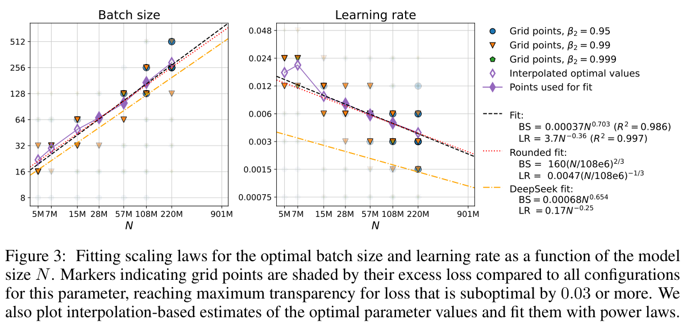
（承上页）我们将这些幂律稍作取整，为所有模型规模选择 batch size 与学习率，结果列于表 4。附录 G.5 在 901M 参数模型上验证学习率和 batch size 的 scaling law。
参数调节方法受到 DeepSeek [15] 启发，后者预测最优 batch size 和学习率作为计算量的函数。利用 Hoffmann 等的 scaling law 将计算量换算为模型规模后，batch size 预测惊人地一致（指数相差小于 0.05，在我们的模型上预测相差不到 60%），学习率预测则有所不同（指数相差 0.11，预测相差 2–3 倍），可能由于使用了不同的权重衰减。两项结果似乎都与关于临界 batch size 的常见观点 [49, 61, 36] 矛盾：常见观点认为低于临界值的每种 batch size 都很好，而我们发现一个最优 batch size，低于它性能会变差。这表明，可能值得进一步调节 \(\beta_2\) 或其他超参数。第 5.1 节进一步讨论 DeepSeek [15]。
采用新超参数后，紧密复现了 Hoffmann 等的 scaling law（图 1e），缩放指数与 0.5 的偏差不超过 0.6%，Chinchilla 计算量下预测模型规模与 Chinchilla 大小的偏差不超过 15%。值得关注的是，此处使用恒定学习率调度，证明精心设计学习率衰减并非这一 scaling law 成立的必要条件。
最后，复现 Kaplan 等 [30] 的调整后 scaling law \(N^\star(C)=1.3\mathrm{e}9(C/8.64\mathrm{e}19)^{0.73}\)，他们通过估计在足够低 batch size 下达到相同结果所需计算量得到该规律。为此，将调好的超参数作为适当 batch size 的替代，并撤销先前的 head FLOP 统计和 warmup 时长修正。得到指数 0.717，与其调整后规律良好吻合；见附录 H 图 18。
4 额外分析
4.1 计算最优损失的趋势
图 4 展示图 1 各实验中，每个计算预算 \(C\) 可达到的最小损失。采用提取最优参数数 \(N^\star\) 与 token 数 \(D^\star\) 的同一插值流程估计最小损失。图中表明，在低计算规模，缩短 warmup 和调参可显著改善损失（各自最多改善每 token 0.5 nat）。但在更大规模，这些干预并未显著改善损失。相反，随着计算量增长，学习率衰减越来越有益，似乎还改善损失的下降速率。也许只是巧合，高估最优损失（因过长 warmup 和过大 batch size）的影响，似乎恰好抵消了低估计算成本（忽略 head 贡献）的影响：图 4 第一条与最后一条曲线高度重合。
与 Hoffmann 等 [25] 类似，我们在最优损失中观察到曲率，而 Kaplan 等 [30] 报告近乎完美的幂律。这一差异同时源于第 3.2 节讨论的 FLOP 统计差异，以及 Hoffmann 等 [25] 的实验（接下页）。
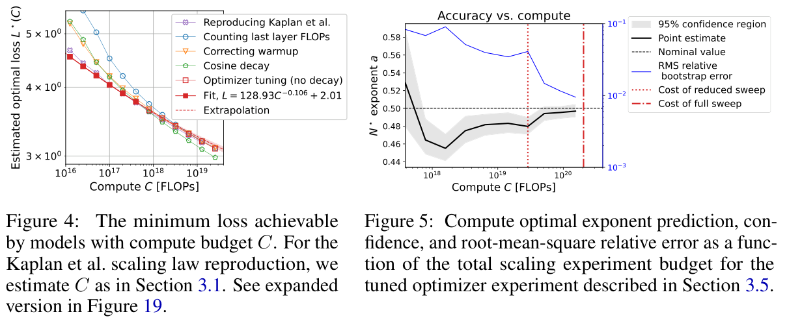
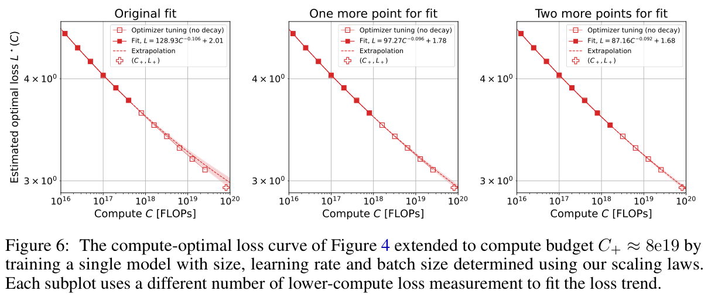
（承上页）延伸到更高的计算预算，此时损失更接近不可约水平。事实上，对于调过优化器的实验（第 3.5 节），饱和幂律可以拟合最优损失并良好外推；对于其他实验，外推较差（见附录图 19）。这表明，\(L(N^\star(C),D^\star(C))\) 中可预测的趋势，是超参数局部最优的指标。我们饱和幂律拟合的指数约为 \(-0.1\)，其绝对值是 Kaplan 等 [30] 指数的两倍。
最后，通过使用更大计算预算训练并评估模型，验证计算最优损失 scaling law。具体地，用 \(C_+\approx8\mathrm{e}19\) FLOPs 的预算训练一个 901M 参数模型；我们的规律预测它计算最优，并采用超参数 scaling laws 给出的 batch size 和学习率（见表 4），达到损失 \(L_+=2.943\)。图 6 将点 \((C_+,L_+)\) 加入图 4 红色曲线，发现它落在预测趋势内。值得关注的是，\(L_+\) 来自一次使用预测最优配置的训练，而较低计算量处的最优损失来自对 IsoFLOP 曲线的插值估计。
4.2 scaling law 准确性与计算量的关系
现在估计 scaling law 实验的计算成本，量化学习率调度的影响，并绘制计算量增加时预测如何改善、置信度如何提高。每个使用固定学习率调度的实验训练成本为 \(1.54\mathrm{e}20\) FLOPs，使用变化长度余弦调度的实验则需要 \(2.99\mathrm{e}20\) FLOPs，基本为两倍；详细讨论见附录 J。第 3.5 节超参数扫描成本为 \(2.04\mathrm{e}20\) FLOPs，略低于使用这一扫描的两次 scaling 实验（每个数据集一次）的合计成本。此外，事后看来，仅使用最大 57M 的模型，以及根据 batch size 选择 \(\beta_2\) 的简单启发式，就能得到类似超参数，成本仅为 \(1.44\mathrm{e}19\) FLOPs。
图 5 通过截断 FLOP 网格调节实验计算预算，展示预测的计算最优模型规模指数 \(a\)、其置信区间以及预测准确性指标的变化。计算量增加时，预测持续变得更准确、更有把握。我们也在 OpenWebText2 数据集上展示这些结果及第 4.1 节结果（见附录 I）。
5 讨论
5.1 相关工作
神经 scaling laws 早于大语言模型出现 [24, 45]，但模型 [57] 和数据 [42, 44] scaling 的突破，使 Kaplan 等 [30] 展示了性能可能随规模无限改善这一引人注目的可能性，引发了该主题文献的爆发。这里聚焦于数量相对较少、处理计算约束下最优资源分配的工作。
对于语言建模，Hu 等 [26] 和 DeepSeek [15] 重复 Hoffmann 等 [25] 的部分分析，推导计算最优 scaling laws。使用 Hoffmann 等 [25] 的方法 3（另见 [9]），Hu 等 [26] 发现，对其模型，最优 scaling 更偏向较大的 token／参数比，高于 Hoffmann 等 [25] 及我们的结果。他们将差异归因于 [25] 以来的建模改进，并认为 Llama 2 [56] 也如此。但我们的设置整合了 Llama 2 的大部分进展，仍产生非常接近 Hoffmann 等 [25] 的幂律。与我们一样，DeepSeek [15] 调节超参数，并用 IsoFLOP 分析确定多个数据集上的计算最优模型规模。他们在主要数据集上得到与 Hoffmann 等 [25] 同量级的指数，但在 OpenWebText2 上报告更高指数 \(a=0.578\)（即预测大规模时较低的 token／参数比），将其归因于该数据集更高的质量。我们也研究这一数据集，却得到更接近 Hoffmann 等的规律。我们猜测，更大指数可能源自训练数据重复；考虑该数据集有限的大小及其计算预算，其实验很可能发生了这种情况。解决这些分歧，可能带来关于最优模型 scaling 的更多宝贵经验。
近期工作还研究超出计算最优区域的受计算约束 scaling laws。考虑越来越普遍的、将中等规模模型训练至超过计算最优点的做法 [例如 55, 56, 29]，Sardana 和 Frankle [46] 计入模型预期推理成本，表明这自然会让最优设置偏向更小模型。Gadre 等 [17] 直接预测超过计算最优点训练的模型损失与下游性能，Muennighoff 等 [37] 则建模计算量与数据量的共同瓶颈。三项工作均以 Hoffmann 等的规律为参照，其中 [17, 37] 将其写入参数化形式。
计算最优 scaling 也在语言以外的领域，尤其视觉中得到研究。Henighan 等 [23] 研究多任务自回归建模，发现的 scaling laws 与 Kaplan 等 [30] 调整后规律（\(a=0.73\)）大致一致。该工作也存在图 1 顶行所述的方法问题（FLOP 统计和过长 warmup），但对小规模模型进行了调参；附录 H 采取同样做法时也得到类似结果。Zhai 等 [59] 刻画 Vision Transformer（ViT）的计算效率前沿，Cherti 等 [13] 研究 CLIP 模型的受计算约束 scaling，但未给出模型规模随计算量变化的幂律。Alabdulmohsin 等 [4] 通过拟合多项参数化形式，预测最优 ViT 形状，处理推理计算量约束下的模型设计。Goyal 等 [20] 指出数据过滤和计算约束间复杂的相互作用。最后，Bachmann 等 [7] 研究 MLP 的计算最优 scaling，得到指数 \(a=0.35\)，表明 MLP 相比更复杂架构需要快得多的数据增长。总之，Hoffmann 等的规律是否及在何种程度上适用于视觉，仍是一个很有吸引力的开放问题。
近期理论工作在简化、可解析设置中研究计算最优 scaling laws [11, 33, 38, 28]。尤其是 Paquette 等 [38] 在随机特征线性回归设置 [35, 5] 中，得到与 Hoffmann 等 [25] 一样的指数 \(a=0.5\)，并猜测这属于更广泛的普适现象。Jeon 和 Van Roy [28] 使用信息论论证，也为无限宽双层 ReLU 网络生成的数据确立了 0.5 的指数。
我们还讨论本文源自先前工作的两个主题。第一，超参数调节的重要性：多项工作 [30, 27, 17, 15] 认为，当所有规模模型都得到恰当调节时，就会出现平滑、可预测的 scaling laws（接下页）。
（承上页）我们的工作（特别是第 4.1 节）为这一原则提供了又一例证，并与先前观察一致：调参在小规模时特别重要。第二，先前研究 [59, 8, 15, 26] 及同期工作 [22] 提出其他学习率调度，以解决余弦衰减的关键缺点：需要提前确定步数预算。我们考虑完全无需提前确定预算的恒定学习率。我们证明，这一简单选择足以复现 Hoffmann 等的规律，并量化相比余弦调度节省的计算量。但第 4.1 节（以及 [25] 等）表明，就损失而言，恒定调度明显差于余弦调度。
同期独立工作。Pearce 和 Song [40] 也研究 Kaplan 等与 Hoffmann 等 scaling laws 的分歧。他们重新分析 Besiroglu 等 [9] 从 Hoffmann 等 [25] 实验中提取的数据，识别最后一层 FLOP 统计为分歧来源。此外，他们报告了小规模实验（模型最大 5M，训练 token 最多 530M），观察到不衰减的学习率调度足以复现 Hoffmann 等指数，且调节学习率是必要的。这些结果独立验证了我们第 3.2、3.4 和 3.5 节的部分观察。Pearce 和 Song [40] 没有发现第 3.3 节描述的 warmup 时长问题。因此，他们复现 Kaplan 等指数时得到接近 0.73 的值，而非 Kaplan 等 [30] 报告的“原始”0.88（见第 3.1、3.5 节及附录 H）。此外，我们实验的计算预算与 Kaplan 等 [30] 大致相当，比 Pearce 和 Song [40] 高约 3 个数量级，而且仔细调节学习率和 batch size。
5.2 局限
计算规模是结果的一个显著局限，同时也是其界定特征：我们的实验与 Kaplan 等 [30] 规模相当，但远小于 Hoffmann 等 [25]。扩大规模可能有效缓解我们识别的每个问题：随规模增加，模型 head 的贡献变得可以忽略，任何固定 warmup 最终都变得足够合理，超参数敏感性下降，如图 4 和图 15 所示。尽管如此，我们认为，在低计算预算下产生正确 scaling 行为的实验规范，对于发展机器学习的经验科学至关重要，尤其在学术环境中。
由于计算预算有限，超参数扫描仅针对网格中较小模型，且每个模型只训练 \(20N\) 步（原文如此），即 Hoffmann 等 scaling law 对应的最优点。这引发担忧：所选超参数是否不公平地偏向按这一特定 token／参数比训练的模型，若对每个模型规模及每个 token／参数比都完美调参并重做实验，是否会得到不同结果。我们认为不大可能：在调参最关键的小规模处，原始超参数本来就偏向更高 token／参数比，因为这些配置仍有足够步数训练，因此专门为它们选择超参数不大可能带来显著收益。附录 G.4 分析已有调参结果，估计完美调参的潜在收益，发现其对结论的影响很可能很小。此外，将超参数迁移到另一个数据集也产生类似结果。
最后，Kaplan 等 [30]、Hoffmann 等 [25] 及本文定义的计算最优 scaling，一个更广泛的局限是，它只关注预训练损失，而非更直接的模型能力指标。规模再次成为问题：大多数零样本和上下文学习能力，不会在本文所考察的规模出现；从小规模代理预测这些能力是重要开放问题 [48, 17]。也可以通过微调研究下游性能，但这可能破坏预训练中清晰的 scaling 模式 [54]，原因或许在于微调过程对超参数选择敏感 [27]。
致谢
感谢 Georgios Smyrnis、Samir Yitzhak Gadre、Achal Dave 和 Mehdi Cherti 提供有益讨论，以及对 OpenLM 和 JSC 集群使用的协助。
TP 和 YC 感谢 Israeli Science Foundation（ISF）第 2486/21 号资助及 Adelis Foundation 的支持。MW 部分获得 Google Fellowship 支持。JJ 感谢德国联邦教育与研究部通过第 01IS22094B 号项目 WestAI - AI Service Center West 提供经费。LW 感谢 Open Philanthropy 的资助。感谢 Gauss Centre for Supercomputing e.V. 以及 John von Neumann Institute for Computing（NIC）提供 Jülich Supercomputing Centre（JSC）的 JUWELS Booster 和 JURECA 超级计算机计算预算。
参考文献
[1] Common Crawl. https://commoncrawl.org.
[2] 大语言模型的新 scaling laws, 2023. URL https://www.lesswrong.com/ posts/midXmMb2Xg37F2Kgn/new-scaling-laws-for-large-language-models. 访问日期： 2024-08-19.
[3] H. Akima. 基于局部过程的插值与平滑曲线拟合新方法. Journal of the ACM (JACM), 1970.
[4] I. Alabdulmohsin, X. Zhai, A. Kolesnikov, and L. Beyer. 塑造 ViT：计算最优模型设计的 scaling laws. In Advances in Neural Information Processing Systems (NeurIPS), 2023.
[5] A. Atanasov, B. Bordelon, S. Sainathan, and C. Pehlevan. 惰性与丰富区域中网络方差受限行为的出现. In International Conference on Learning Representations (ICLR), 2023.
[6] J. L. Ba, J. R. Kiros, and G. E. Hinton. 层归一化. arXiv:1607.06450, 2016.
[7] G. Bachmann, S. Anagnostidis, and T. Hofmann. MLP 的 scaling：一个关于归纳偏置的故事. Advances in Neural Information Processing Systems (NeurIPS), 2024.
[8] M. Bellagente, J. Tow, D. Mahan, D. Phung, M. Zhuravinskyi, R. Adithyan, J. Baicoianu, B. Brooks, N. Cooper, A. Datta, et al. Stable LM 2 1.6B 技术报告. arXiv:2402.17834, 2024.
[9] T. Besiroglu, E. Erdil, M. Barnett, and J. You. Chinchilla scaling：一次复现尝试. arXiv:2404.10102, 2024.
[10] S. Black, S. Biderman, E. Hallahan, Q. Anthony, L. Gao, L. Golding, H. He, C. Leahy, K. McDonell, J. Phang, et al. GPT-NeoX-20B：开源自回归语言模型. arXiv:2204.06745, 2022.
[11] B. Bordelon, A. Atanasov, and C. Pand Pehlevan. 神经 scaling laws 的动力学模型. In International Conference on Machine Learning (ICML), 2024.
[12] T. Brown, B. Mann, N. Ryder, M. Subbiah, J. D. Kaplan, P. Dhariwal, A. Neelakantan, P. Shyam, G. Sastry, A. Askell, et al. 语言模型是少样本学习器. Advances in neural information processing systems (NeurIPS), 2020.
[13] M. Cherti, R. Beaumont, R. Wightman, M. Wortsman, G. Ilharco, C. Gordon, C. Schuhmann, L. Schmidt, and J. Jitsev. 对比式语言—图像学习的可复现 scaling laws. In Conference on computer vision and pattern recognition (CVPR), 2023.
[14] A. Chowdhery, S. Narang, J. Devlin, M. Bosma, G. Mishra, A. Roberts, P. Barham, H. W. Chung, C. Sutton, S. Gehrmann, et al. PaLM：使用 Pathways 扩展语言建模. Journal of Machine Learning Research, 24(240):1–113, 2023.
[15] DeepSeek. DeepSeek LLM：以长期主义扩展开源语言模型. arXiv:2401.02954, 2024.
[16] M. Dehghani, J. Djolonga, B. Mustafa, P. Padlewski, J. Heek, J. Gilmer, A. P. Steiner, M. Caron, R. Geirhos, I. Alabdulmohsin, et al. 将视觉 transformer 扩展至 220 亿参数. In International Conference on Machine Learning (ICML), 2023.
[17] S. Y. Gadre, G. Smyrnis, V. Shankar, S. Gururangan, M. Wortsman, R. Shao, J. Mercat, A. Fang, J. Li, S. Keh, R. Xin, M. Nezhurina, I. Vasiljevic, J. Jitsev, A. G. Dimakis, G. Ilharco, S. Song, T. Kollar, Y. Carmon, A. Dave, R. Heckel, N. Muennighoff, and L. Schmidt. 语言模型在过度训练和下游任务上可靠地缩放. arXiv:2403.08540, 2024.
[18] L. Gao, S. Biderman, S. Black, L. Golding, T. Hoppe, C. Foster, J. Phang, H. He, A. Thite, N. Nabeshima, S. Presser, and C. Leahy. The Pile：用于语言建模的 800GB 多样化文本数据集. arXiv:2101.00027, 2020.
[19] P. Goyal, P. Dollár, R. Girshick, P. Noordhuis, L. Wesolowski, A. Kyrola, A. Tulloch, Y. Jia, and K. He. 准确的大 mini-batch SGD：一小时训练 ImageNet. arXiv:1706.02677, 2017.
[20] S. Goyal, P. Maini, Z. C. Lipton, A. Raghunathan, and J. Z. Kolter. 数据过滤的 scaling laws：数据整理不能无视计算量. In Conference on computer vision and pattern recognition (CVPR), 2024.
[21] S. Gururangan, M. Wortsman, S. Y. Gadre, A. Dave, M. Kilian, W. Shi, J. Mercat, G. Smyrnis, G. Ilharco, M. Jordan, R. Heckel, A. Dimakis, A. Farhadi, V. Shankar, and L. Schmidt. OpenLM：精简且高性能的语言建模（LM）代码库, 2023. https://github.com/ mlfoundations/open_lm.
[22] A. Hägele, E. Bakouch, A. Kosson, L. B. Allal, L. Von Werra, and M. Jaggi. 超越固定训练时长的 scaling laws 与计算最优训练. arXiv:2405.18392, 2024.
[23] T. Henighan, J. Kaplan, M. Katz, M. Chen, C. Hesse, J. Jackson, H. Jun, T. B. Brown, P. Dhariwal, S. Gray, et al. 自回归生成式建模的 scaling laws. arXiv:2010.14701, 2020.
[24] J. Hestness, S. Narang, N. Ardalani, G. F. Diamos, H. Jun, H. Kianinejad, M. M. A. Patwary, Y. Yang, and Y. Zhou. 深度学习的 scaling 在经验上可预测. arXiv:1712.00409, 2017.
[25] J. Hoffmann, S. Borgeaud, A. Mensch, E. Buchatskaya, T. Cai, E. Rutherford, D. de Las Casas, L. A. Hendricks, J. Welbl, A. Clark, et al. 计算最优大语言模型训练的经验分析. In Advances in Neural Information Processing Systems (NeurIPS), 2022.
[26] S. Hu, Y. Tu, X. Han, C. He, G. Cui, X. Long, Z. Zheng, Y. Fang, Y. Huang, W. Zhao, et al. MiniCPM：通过可扩展训练策略揭示小语言模型的潜力. arXiv preprint arXiv:2404.06395, 2024.
[27] M. Ivgi, Y. Carmon, and J. Berant. 显微镜下的 scaling laws：从小规模实验预测 transformer 性能. In Conference on Empirical Methods in Natural Language Processing (EMNLP), 2022.
[28] H. J. Jeon and B. Van Roy. 神经 scaling laws 的信息论基础. arXiv:2407.01456, 2024.
[29] A. Q. Jiang, A. Sablayrolles, A. Mensch, C. Bamford, D. S. Chaplot, F. B. Diego de las Casas, G. Lengyel, G. Lample, L. Saulnier, L. R. Lavaud, M.-A. Lachaux, P. Stock, T. L. Scao, T. Lavril, T. Wang, T. Lacroix, and W. E. Sayed. Mistral 7B. arXiv:2310.06825, 2023.
[30] J. Kaplan, S. McCandlish, T. Henighan, T. B. Brown, B. Chess, R. Child, S. Gray, A. Radford, J. Wu, and D. Amodei. 神经语言模型的 scaling laws. arXiv:2001.08361, 2020.
[31] B. Lefaudeux, F. Massa, D. Liskovich, W. Xiong, V. Caggiano, S. Naren, M. Xu, J. Hu, M. Tintore, S. Zhang, P. Labatut, D. Haziza, L. Wehrstedt, J. Reizenstein, and G. Sizov. xFormers：模块化且便于修改的 transformer 建模库. https://github.com/ facebookresearch/xformers, 2022.
[32] O. Lieber, O. Sharir, B. Lenz, and Y. Shoham. Jurassic-1：技术细节与评估, 2021.
[33] L. Lin, J. Wu, S. M. Kakade, P. L. Bartlett, and J. D. Lee. 线性回归中的 scaling laws：计算量、参数与数据. arXiv:2406.08466, 2024.
[34] I. Loshchilov and F. Hutter. 解耦权重衰减正则化. arXiv:1711.05101, 2017.
[35] A. Maloney, D. A. Roberts, and J. Sully. 神经 scaling laws 的可解模型. arXiv:2210.16859, 2022.
[36] S. McCandlish, J. Kaplan, D. Amodei, and The OpenAI Dota Team. 大 batch 训练的经验模型. arXiv:1812.06162, 2018.
[37] N. Muennighoff, A. Rush, B. Barak, T. Le Scao, N. Tazi, A. Piktus, S. Pyysalo, T. Wolf, and C. A. Raffel. 扩展数据受限语言模型. Advances in Neural Information Processing Systems (NeurIPS), 2024.
[38] E. Paquette, C. Paquette, L. Xiao, and J. Pennington. 计算最优神经 scaling laws 的 4+3 个阶段. arXiv:2405.15074, 2024.
[39] A. Paszke, S. Gross, F. Massa, A. Lerer, J. Bradbury, G. Chanan, T. Killeen, Z. Lin, N. Gimelshein, L. Antiga, et al. PyTorch：命令式高性能深度学习库. 2019.
[40] T. Pearce and J. Song. 调和 Kaplan 与 Chinchilla scaling laws. arXiv:2406.12907, 2024.
[41] G. Penedo, Q. Malartic, D. Hesslow, R. Cojocaru, H. Alobeidli, A. Cappelli, B. Pannier, E. Almazrouei, and J. Launay. Falcon LLM 的 RefinedWeb 数据集：仅使用网页数据胜过精心整理的语料. In Advances in Neural Information Processing Systems (NeurIPS), 2023.
[42] A. Radford, J. Wu, R. Child, D. Luan, D. Amodei, I. Sutskever, et al. 语言模型是无监督多任务学习器, 2019.
[43] J. W. Rae, S. Borgeaud, T. Cai, K. Millican, J. Hoffmann, F. Song, J. Aslanides, S. Henderson, R. Ring, S. Young, et al. 扩展语言模型：训练 Gopher 的方法、分析与洞见. arXiv:2112.11446, 2021.
[44] C. Raffel, N. Shazeer, A. Roberts, K. Lee, S. Narang, M. Matena, Y. Zhou, W. Li, and P. J. Liu. 使用统一的文本到文本 transformer 探索迁移学习的极限. Journal of Machine Learning Research (JMLR), 21(140):1–67, 2020.
[45] J. S. Rosenfeld, A. Rosenfeld, Y. Belinkov, and N. Shavit. 跨规模泛化误差的构造性预测. arXiv:1909.12673, 2019.
[46] N. Sardana and J. Frankle. 超越 Chinchilla 最优：在语言模型 scaling laws 中计入推理成本. arXiv:2401.00448, 2023.
[47] T. L. Scao, A. Fan, C. Akiki, E. Pavlick, S. Ili´c, D. Hesslow, R. Castagné, A. S. Luccioni, F. Yvon, et al. BLOOM：176B 参数的开放访问多语言模型. arXiv:2211.05100, 2022.
[48] R. Schaeffer, B. Miranda, and S. Koyejo. 大语言模型的涌现能力是海市蜃楼吗? Advances in Neural Information Processing Systems (NeurIPS), 2024.
[49] C. J. Shallue, J. Lee, J. Antognini, J. Sohl-Dickstein, R. Frostig, and G. E. Dahl. 测量数据并行对神经网络训练的影响. Journal of Machine Learning Research (JMLR), 20(112):1–49, 2019.
[50] N. Shazeer. GLU 变体改进 transformer. arXiv:2002.05202, 2020.
[51] M. Shoeybi, M. Patwary, R. Puri, P. LeGresley, J. Casper, and B. Catanzaro. Megatron-LM：使用模型并行训练数十亿参数语言模型. arXiv:1909.08053, 2019.
[52] S. Smith, M. Patwary, B. Norick, P. LeGresley, S. Rajbhandari, J. Casper, Z. Liu, S. Prabhumoye, G. Zerveas, V. Korthikanti, et al. 使用 DeepSpeed 和 Megatron 训练大型生成式语言模型 Megatron-Turing NLG 530B. rXiv:2201.11990, 2022.
[53] J. Su, M. Ahmed, Y. Lu, S. Pan, W. Bo, and Y. Liu. RoFormer：采用旋转位置 embedding 的增强 transformer. Neurocomputing, 568:127063, 2024.
[54] Y. Tay, M. Dehghani, J. Rao, W. Fedus, S. Abnar, H. W. Chung, S. Narang, D. Yogatama, A. Vaswani, and D. Metzler. 高效扩展：来自 transformer 预训练与微调的洞见. In International Conference on Learning Representations (ICLR), 2022.
[55] H. Touvron, T. Lavril, G. Izacard, X. Martinet, M.-A. Lachaux, T. Lacroix, B. Rozière, N. Goyal, E. Hambro, F. Azhar, A. Rodriguez, A. Joulin, E. Grave, and G. Lample. LLaMA：开放、高效的基础语言模型. arXiv:2302.13971, 2023.
[56] H. Touvron, L. Martin, K. Stone, P. Albert, A. Almahairi, Y. Babaei, N. Bashlykov, S. Batra, P. Bhargava, S. Bhosale, D. Bikel, L. Blecher, C. C. Ferrer, M. Chen, G. Cucurull, D. Esiobu, J. Fernandes, J. Fu, W. Fu, B. Fuller, C. Gao, V. Goswami, N. Goyal, A. Hartshorn, S. Hosseini, R. Hou, H. Inan, M. Kardas, V. Kerkez, M. Khabsa, I. Kloumann, A. Korenev, P. S. Koura, M.-A. Lachaux, T. Lavril, J. Lee, D. Liskovich, Y. Lu, Y. Mao, X. Martinet, T. Mihaylov, P. Mishra, I. Molybog, Y. Nie, A. Poulton, J. Reizenstein, R. Rungta, K. Saladi, A. Schelten, R. Silva, E. M. Smith, R. Subramanian, X. E. Tan, B. Tang, R. Taylor, A. Williams, J. X. Kuan, P. Xu, Z. Yan, I. Zarov, Y. Zhang, A. Fan, M. Kambadur, S. Narang, A. Rodriguez, R. Stojnic, S. Edunov, and T. Scialom. Llama 2：开放的基础模型与微调聊天模型. arXiv:2307.09288, 2023.
[57] A. Vaswani, N. Shazeer, N. Parmar, J. Uszkoreit, L. Jones, A. N. Gomez, Ł. Kaiser, and I. Polosukhin. 你只需要 attention. 2017.
[58] M. Wortsman, P. J. Liu, L. Xiao, K. E. Everett, A. A. Alemi, B. Adlam, J. D. Co-Reyes, I. Gur, A. Kumar, R. Novak, J. Pennington, J. Sohl-Dickstein, K. Xu, J. Lee, J. Gilmer, and S. Kornblith. 大规模 transformer 训练不稳定性的小规模代理. In International Conference on Learning Representations (ICLR), 2024.
[59] X. Zhai, A. Kolesnikov, N. Houlsby, and L. Beyer. 扩展视觉 transformer. In Conference on computer vision and pattern recognition (CVPR), 2022.
[60] B. Zhang, I. Titov, and R. Sennrich. 通过随深度缩放的初始化与合并 attention 改进深层 transformer. In Conference on Empirical Methods in Natural Language Processing (EMNLP), 2019.
[61] G. Zhang, L. Li, Z. Nado, J. Martens, S. Sachdeva, G. Dahl, C. Shallue, and R. B. Grosse. 在何种 batch size 下，哪些算法选择重要？来自带噪声二次模型的洞见. In Advances in Neural Information Processing Systems (NeuIPS), 2019.
[62] S. Zhang, S. Roller, N. Goyal, M. Artetxe, M. Chen, S. Chen, C. Dewan, M. Diab, X. Li, X. V. Lin, et al. OPT：开放的预训练 transformer 语言模型. arXiv:2205.01068, 2022.
[63] Y. Zhang, C. Chen, N. Shi, R. Sun, and Z.-Q. Luo. 无需修改更新规则，Adam 即可收敛. Advances in neural information processing systems, 35:28386–28399, 2022.
A 解读 Hoffmann 等的假设
Hoffmann 等 [25] 假设 scaling law 分歧源于学习率调度差异。“学习率调度”一词包含 warmup 和衰减两部分，将 Hoffmann 等 [25] 第 2 节“建模 scaling 行为”一段理解为猜测两部分都导致分歧，是合理的。然而，我们认为其假设强调学习率调度的衰减部分，主要有两个原因。
- Hoffmann 等的图 A1。第 2 节中，他们引用图 A1，作为学习率调度影响计算最优 scaling 的证据。但该图仅改变衰减部分，保持 warmup 固定。因此，在其假设范围内，他们似乎将学习率调度等同于学习率衰减。
- 后续文献。Hu 等 [26] 第 4.1 节、Hägele 等 [22] 第 1 节，以及 [2]，都将学习率调度的衰减部分称为分歧原因。这表明，社区将 Hoffmann 等的假设理解为针对衰减部分。
B 估计 FLOPs 并计入 attention
本节将模型规模 \(N\) 的定义与三种替代方案比较，并讨论相关工作作出的选择。在此之前，先给出根据模型深度 \(l\)、宽度 \(d\) 和词表大小 \(v=50\,432\) 计算我们定义的 \(N\) 的精确表达式。出于实现效率考虑，OpenLM 将前馈维度设为 \(d_{\mathrm{FF}}=256\left\lfloor(255+\lfloor8d/3\rfloor)/256\right\rfloor\)。每个 SwiGLU 前馈块包含 3 个 \(d_{\mathrm{ff}}\times d\) 参数矩阵，每个 attention 块的线性层有 \(4d^2\) 参数，因此总估计为：
\[N=(3d_{\mathrm{FF}}+4d)dl+dv.\qquad\text{(5)}\]
首先考虑以非 embedding 可学习权重总数 \(N_{\mathrm{exact}}\)（例如也包括 LayerNorm 增益）替代线性层权重数。表 2 第四列表明，这一数值与 \(N\) 的差异可以忽略。还应注意，embedding 层不需要矩阵—向量乘法，因此对模型 FLOP 统计的贡献可以忽略。
因此，近似 \(\mathrm{FLOPs}(N,D)=6ND\) 中唯一不可忽略的误差来源是 attention 层。OpenLM 的 attention 维度等于模型宽度，Kaplan 等 [30，表 1] 表明，前向和反向传播中的 attention 操作，每层每 token 额外需要 \(6nd\) FLOPs，其中序列长度 \(n=2048\)。因此，若定义有效模型规模
\[N_{\mathrm{eff}}:=N+ndl,\qquad\text{(6)}\]
则 \(6N_{\mathrm{eff}}D\) 计入了包括 attention 在内、训练 \(D\) 个 token 的成本。
现在考虑这些近似的差异，及其对计算最优 scaling laws 的影响。表 2 第五列比较 \(N_{\mathrm{eff}}\) 与 \(N\)，显示随着模型增大，比值 \(N_{\mathrm{eff}}/N\) 从约 1.1 平滑升至约 1.2，再降回 1.1。若比值完全恒定，使用 \(N\) 与 \(N_{\mathrm{eff}}\) 本质上没有区别，因为其中一个的幂律直接对应另一个的幂律。由于我们网格中该比值近似恒定，预期不同定义所得 scaling laws 差异有限。图 7 验证这一预期，其定量、定性结果均类似图 1。因此，无法确切判断哪个定义更适合预测计算最优模型规模。不过，最后一项调参实验预测，在 Chinchilla／Gopher 计算规模下，最优有效模型规模比标准定义的预测大约多 16B 参数。在这些规模，模型规模与有效模型规模基本相同，因此两种预测可直接比较。如果将 Hoffmann 等的规律作为真值，使用 \(N_{\mathrm{eff}}\) 的预测略差。
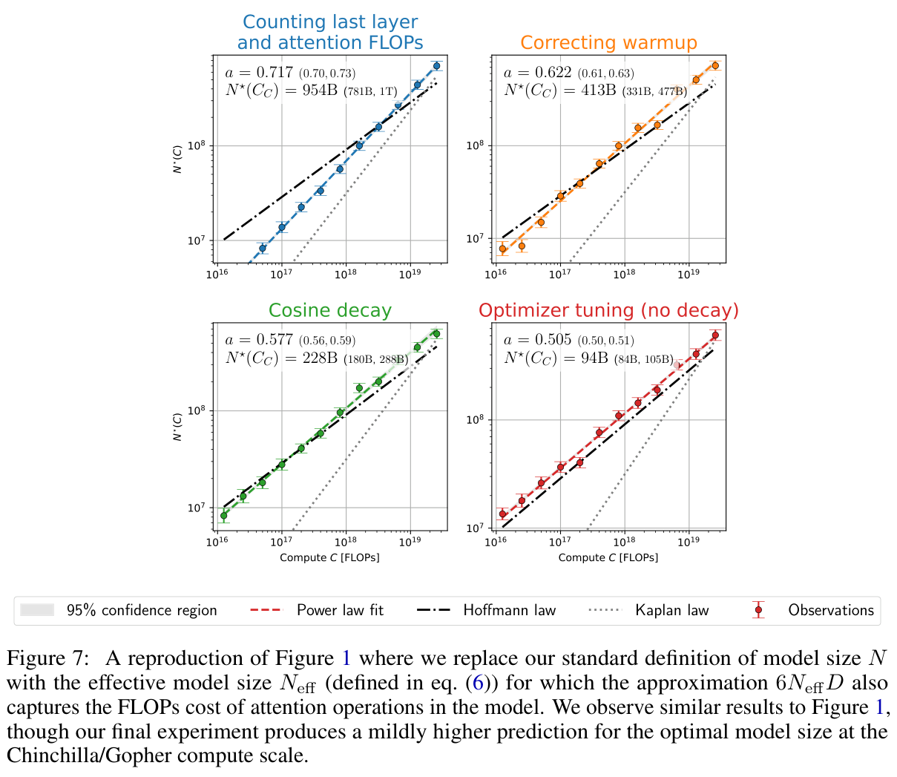
最后，讨论第三种模型规模度量，不计模型 head 对 FLOP 统计的贡献，即
\[N_{\mathrm{Kaplan}}:=N-dv.\qquad\text{(7)}\]
这是 Kaplan 等 [30] 实验所用定义，以 \(6N_{\mathrm{Kaplan}}D\) 近似 FLOP 数。选择它的主要动机是，不计 embedding 参数会在无限计算量情形得到预测性更好的 scaling laws。但表 2 最后一列表明，对较小模型，这一近似会导致巨大、系统性的 FLOP 统计误差。第 3.1、3.2 节表明，这是 Kaplan 等／Hoffmann 等分歧的主要因素之一。
本节最后概述 Kaplan 等 [30] 之外相关工作的模型规模定义。Henighan 等 [23] 与 Kaplan 等 [30] 一样使用 \(N_{\mathrm{Kaplan}}\)，因此观察到较高缩放指数。Hoffmann 等 [25] 计算 FLOPs 时同时计入线性层和 attention 层，在前两种估计方法中本质上使用 \(N_{\mathrm{eff}}\)。但第三种方法似乎忽略 attention FLOPs，并计入 embedding 参数，即设 \(N'=N+dv\)。DeepSeek [15] 比较三种模型规模定义，包括 \(N_{\mathrm{Kaplan}}\)、\(N\)，以及一种混合 \(N_{\mathrm{eff}}\) 与 \(N_{\mathrm{Kaplan}}\) 的定义：计入 attention、忽略模型 head。他们报告最后一种在大规模下最能预测计算最优损失。但我们注意到，[25] 和 [15] 均称 attention 的 FLOPs 成本是 Kaplan 等 [30] 所列的两倍；我们认为，这很可能是因为没有考虑 attention 是因果的，因此仅需无结构矩阵—向量乘法一半的 FLOPs。最后，Muennighoff 等 [37]、Gadre 等 [17]、Hu 等 [26] 与我们一样使用 \(N\)。
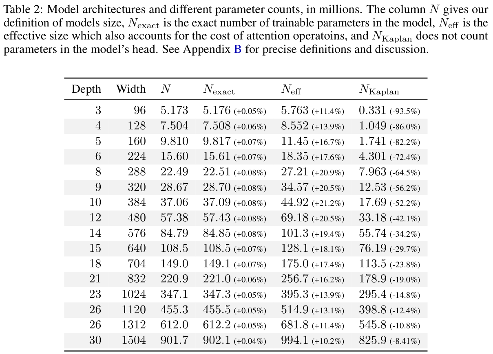
C 额外训练设置说明
建模。使用 OpenLM 训练仅含 decoder 的 Transformer [57] 语言模型进行 next-token 预测；OpenLM 基于 PyTorch [39]，用于高效训练中等规模语言模型。库配置与 [17] 大致相同，采用 xFormers [31]、bfloat16 自动混合精度、(qk)-LayerNorm [6, 16, 58]、SwiGLU [50]、随深度缩放的初始化 [60] 和旋转位置 embeddings [53]。使用 GPT-NeoX-20B tokenizer [10]，其词表大小 50432 与 Kaplan 等 [30] 接近。序列长度为 2048，是 Kaplan 等 [30] 的两倍，但尝试让 batch size 与 warmup 时长等参数按 token 数匹配。embedding 与 head 层不共享权重。
优化。全文使用 AdamW 优化器 [34] 最小化标准对数损失，并加入稳定训练的辅助 z-loss 项 [14]（系数 \(1\mathrm{e}{-4}\)）；分析时，记录的训练和验证对数损失都不含 z-loss 项。遵照 Wortsman 等 [58] 建议，使用独立权重衰减 [34]，参数为 \(1\mathrm{e}{-4}\)，即标准 PyTorch AdamW 实现的“weight decay”设为 \(1\mathrm{e}{-4}/\eta\)，其中 \(\eta\) 为基础学习率。表 3、4 描述实验超参数选择。
硬件与计算成本。使用含 40GB A100 GPU 的集群，每次训练并行使用 4–32 个 GPU。采用 OpenLM／PyTorch 分布式数据并行实现及 gradient checkpointing。根据日志，本文全部实验的总计算成本为 22.3K GPU 小时，总 FLOP 数为 \(3.03\mathrm{e}21\)。
数据重复。所用数据集足够大，所有训练运行本可完全不重复数据。但由于两个软件问题，部分实验出现有限重复。具体而言，超参数扫描所用数据可能（接下页）。
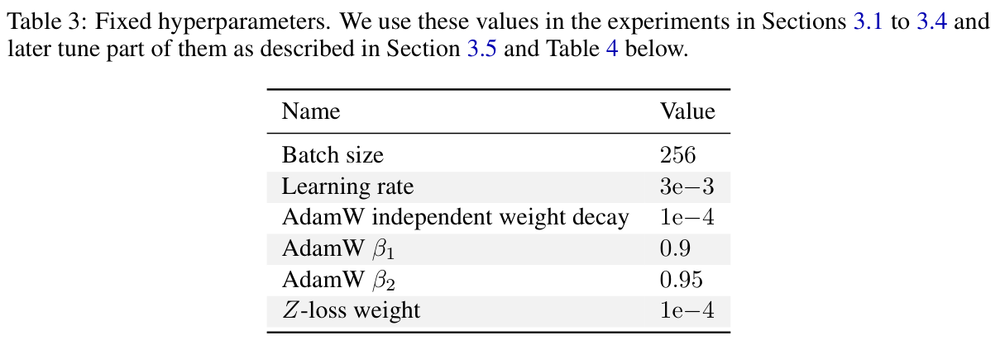
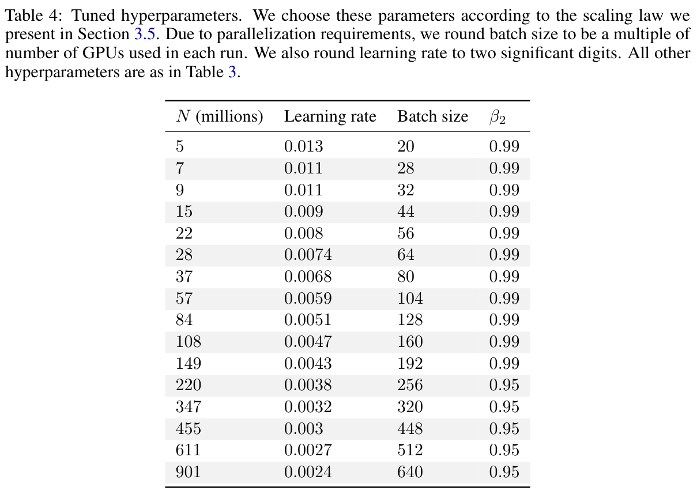
（承上页）最多重复了 10 次。此外，在 OpenWebText2 上，部分更大规模训练运行可能最多重复数据 4 次。我们认为这对结果影响有限或没有影响，因为超参数扫描涉及较小、不太可能记忆数据的模型，而 [37] 表明 4 次数据重复仅轻微影响模型性能。在远大的 RefinedWeb 数据集上的主要实验中，我们已验证未发生数据重复。
D 额外数据分析细节
本节全面描述拟合 \(N^\star(C)\) 幂律的流程。\(D^\star\) 幂律的处理类似，使用关系（3）。
训练损失平滑。使用变长平均窗口平滑训练损失。具体地，将第 \(i\) 步损失估计为从 \(i-\lfloor pi\rfloor\) 步到（接下页）。
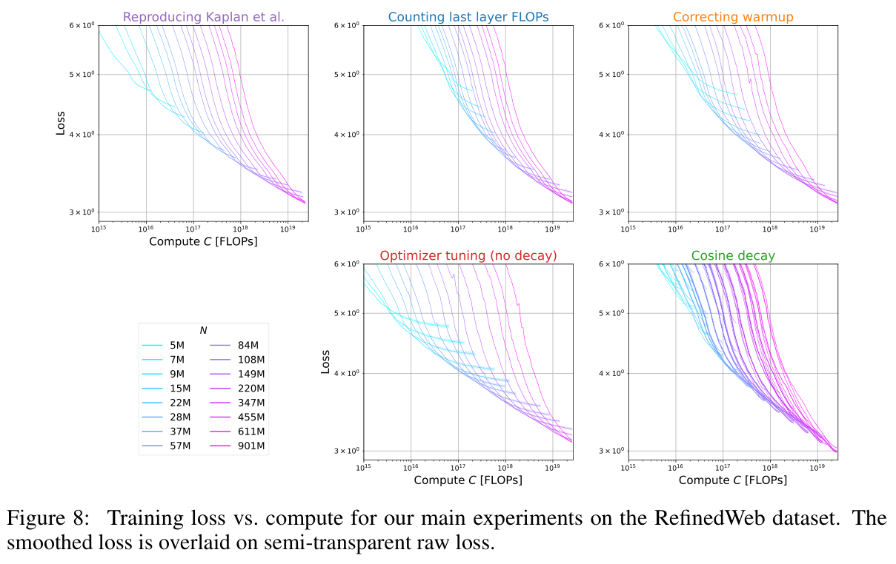
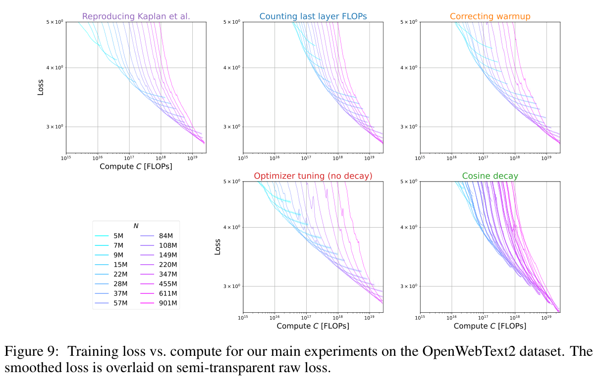
（承上页）第 \(i+\lfloor pi\rfloor\) 步的平均值，其中 \(p=0.05\)。每隔 \(k=20\) 步记录平均训练损失会引入滞后，我们还将训练损失索引移动 \(k/2\) 来补偿；这对匹配优化早期的验证损失相当重要。我们已验证，在有验证损失处，平滑训练损失与验证损失的吻合程度大致在验证损失的抽样误差以内。
从单次训练获取 \(C_i\) FLOPs 处的损失。要估计规模 \(N\) 的模型训练至计算量 \(C_i\) 时的损失，我们对最接近 \(C_i/(6NB)\) 的两个步数的验证／训练损失作对数空间线性插值，其中 \(B\) 为以 token 计的 batch size。还要求最近的步数与 \(C_i/(6NB)\) 的偏差不超过 10%；若不存在这样的步数，就不返回损失。大多数实验精确在第 \(\lceil C_i/(6NB)\rceil\) 步计算验证损失。但对于（接下页）。
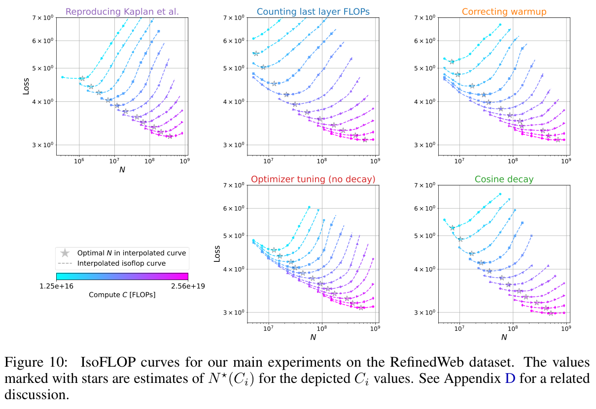
（承上页）第 3.1 节和附录 B 中采用其他 \(N\) 定义的实验，没有验证损失样本，因此使用训练损失。
估计损失噪声。将理想损失定义为对模型训练取期望的总体对数损失，估计误差有两个来源：验证集的有限样本，以及训练随机种子之间的差异。对留出数据的 100 个子样本保存验证损失，直接估计前者，发现在不同实验设置中标准差介于 0.001–0.002。为衡量种子差异带来的误差，使用调好的超参数，对网格中较小模型以 7 个种子分别训练 \(20N\) token。我们发现，warmup 后的平滑训练损失与跨种子标准差大致呈对数线性关系（见图 12）。对于 RefinedWeb（表 4），它似乎在抽样误差附近饱和；我们启发式地给损失大于 7 的样本指定标准差 0.05，损失小于 3 的样本指定 0.002，对损失在 \([3,7]\) 的样本，在对数空间线性插值标准差。对于 OpenWebText2，跨种子方差明显更大，训练损失也更不稳定（比较图 8、9），可能源于文档长度差异。因此，将标准差估计设为损失 6 处 0.1、损失 3 处 0.01，区间外饱和，区间内在对数空间插值。
估计 \(N^\star(C_i)\) 及其不确定性。给定一列 \(N\) 及其在计算量 \(C_i\) 处按上述方法获取的损失样本，用下述类似 bootstrap 的流程估计最优 \(N^\star(C_i)\)。对每个 bootstrap 样本，给每个损失加入独立高斯噪声，标准差由上述启发式公式决定。然后在对数空间用 Akima [3] 插值损失—\(N\) 曲线，并求插值函数的最小值位置；由此形成 \(N^\star(C_i)\) 估计的 bootstrap 样本总体。在对数空间估计其标准差，取它与网格平均对数间距三分之一（约为 \(\frac13\log\sqrt2\)）中的较大值。偶尔 \(N^\star\) 落在 \(N\) 网格边界（尽管实验设计尽量避免）。若超过一半 bootstrap 样本落在边界，则后续幂律拟合排除该 \(C_i\)。否则，仅保留不在网格边界的样本，并按被排除样本的比例放大标准差估计。
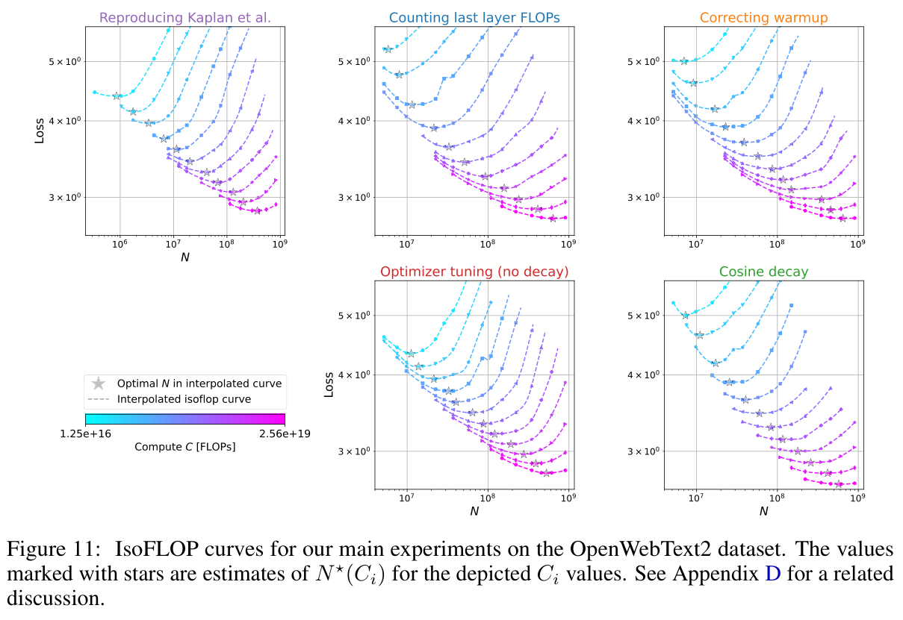
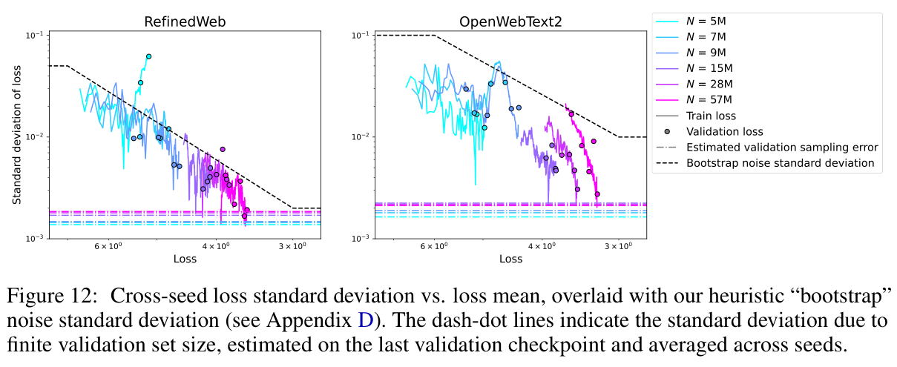
E 主要实验的额外图
图 13 对图 1 作补充，绘制图 1 所述全部实验的 \(D^\star,\rho^\star,N^\star\) 观察值与幂律拟合。图 14 在 OpenWebText2 数据集上复现该图，定性和定量结果均一致。
F warmup 时长与最终学习率的消融
我们开展小规模实验，验证启发式 warmup 时长（第 3.3 节）和余弦衰减结束时学习率（第 3.4 节）对结果影响很小。在 RefinedWeb 上训练 108M 参数模型，超参数与表 4 相同，训练约 \(2.1\mathrm{B}\) token。用留出的 RefinedWeb 数据评估，按附录 D 所述计算验证损失及抽样标准差。
warmup 时长。将 warmup token 数从 \(N/4\) 变到 \(16N\)。表 5 汇总结果，发现 \(N\) 个 token 的 warmup 接近最优。
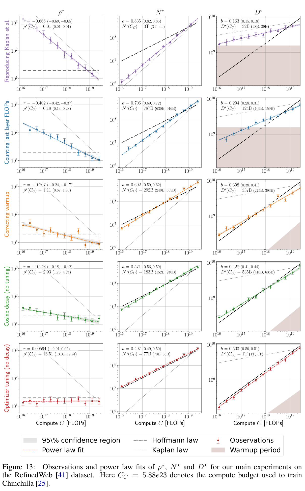
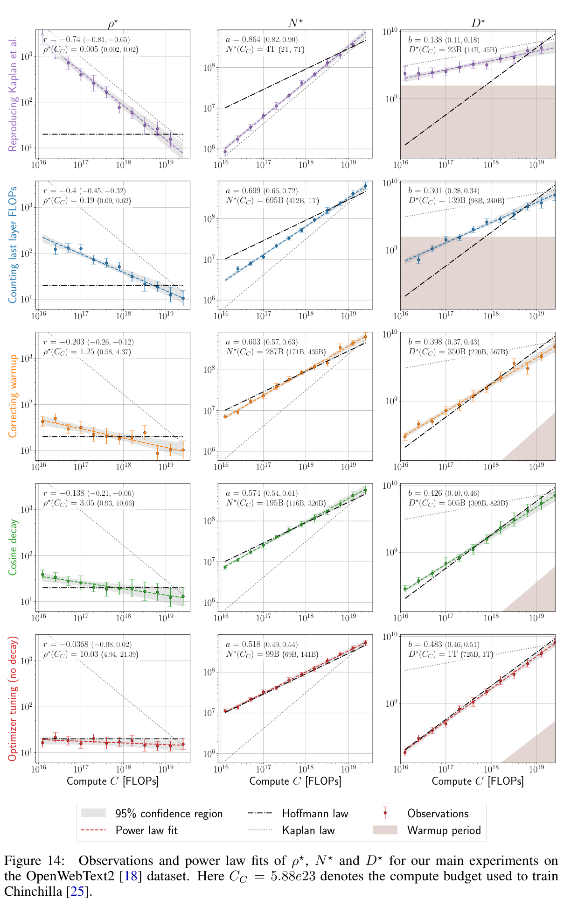
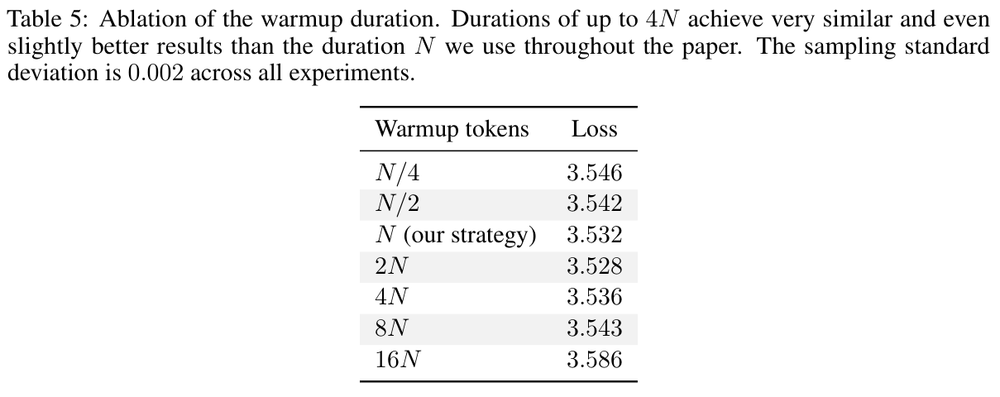
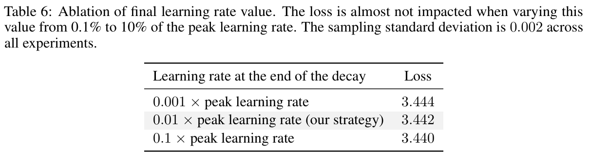
最终学习率。将最终学习率从峰值的 0.1% 变至 10%。这里使用余弦衰减及表 3 超参数，与第 3.4 节设置相同。结果列于表 6，发现损失几乎不受最终学习率影响。
G 拟合超参数
本节详细描述超参数调节流程。
G.1 完整参数扫描结果
我们对网格（表 2）中 6 个模型开展广泛参数扫描，规模介于 5M 和 221M 参数。对每个模型扫描学习率、batch size 及三个 \(\beta_2\) 值。每个大小为 \(N\) 的模型训练 \(20N\) token（即遵循 Hoffmann 等的规律），并记录训练结束时验证损失。超参数扫描共包含 642 次训练，仅在单个数据集 RefinedWeb 上执行。图 15 绘制扫描记录的全部损失值。与 Wortsman 等 [58] 类似图相比，我们观察到更强的学习率选择敏感性，特别在较小模型上。我们猜测，原因在于 [58] 所有模型都训练相同 token 数，因此较小模型在宽泛的学习率范围内均达到完全收敛。
G.2 通过插值估计最优 batch size 和学习率
为估计每种模型规模的最优 batch size 与学习率，采用两阶段插值。第一阶段，对每种模型规模和 batch size，用 Akima [3] 在对数空间对损失作为学习率的函数进行插值，以估计最优学习率；对每个学习率，取三个 \(\beta_2\) 中所得最低损失。最小化插值函数，保存最小值位置及最小值。第二阶段，在 batch size 与插值损失的配对序列上重复此过程，为每种模型规模寻找最优 batch size。要估计最优学习率，只需对（batch size、使损失最小的学习率）序列插值，并在最优 batch size 处求值。
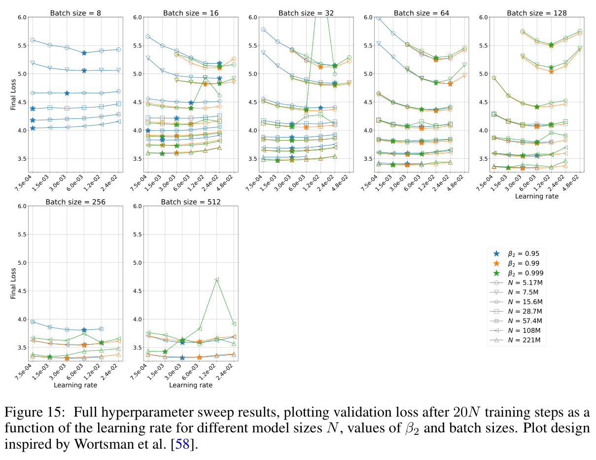
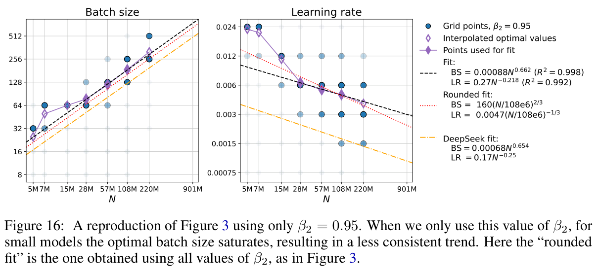
G.3 调节 \(\beta_2\) 的必要性
为说明调节 \(\beta_2\) 的重要性，我们重复上述分析，但仅考虑 \(\beta_2=0.95\) 的实验。图 16 展示结果，说明这会破坏图 3 中部分清晰的 scaling 趋势。
G.4 理想调参下的 scaling law 估计
通过对 \(N\le108\mathrm{M}\) 的模型扫描超参数，每个模型训练 \(20N\) token，确定学习率与 batch size 的 scaling laws。第 5.2 节指出，这是一个局限，因为它可能把对 Hoffmann 等 scaling 的偏好“嵌入”结果。理想调参策略会为每种模型规模与每个计算预算，或等价地，为每种模型规模与每个 token／参数比 \(\rho\)，选择不同超参数。
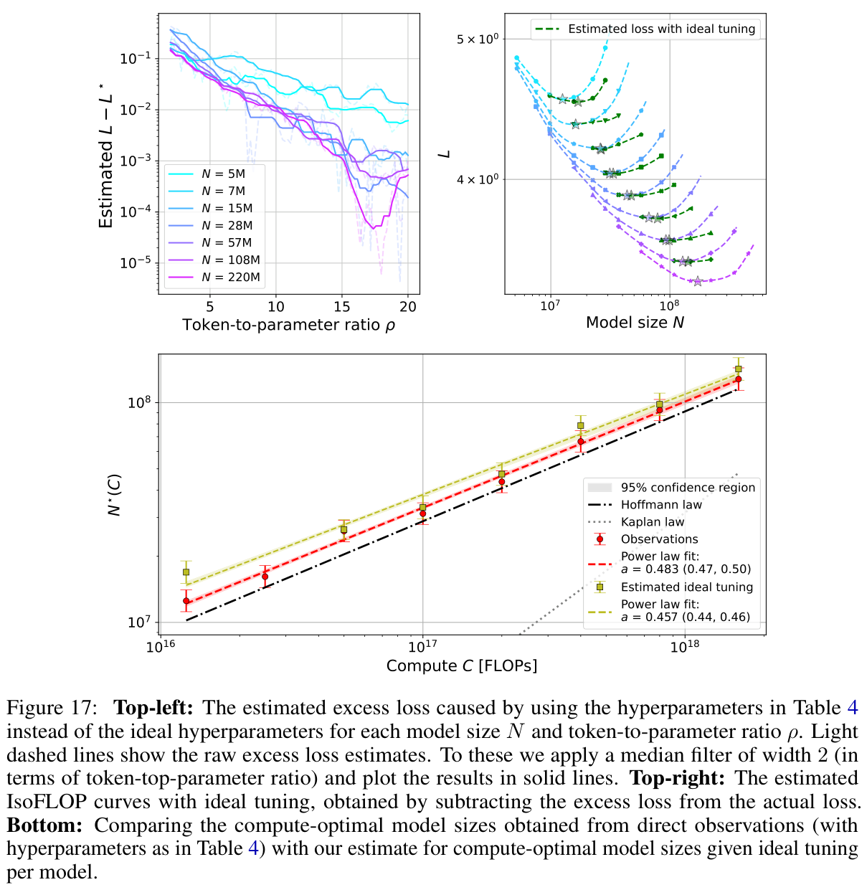
本节使用超参数扫描中的训练损失数据，近似这样的理想调参，并估计其对计算最优 scaling law 的影响，分三步进行。
- 将次优程度估计为 token／参数比的函数。对于 \(\rho<20\)，用第 3.5 节相同的插值逻辑估计最佳超参数，但使用训练 \(D=\rho N\) token 后的训练损失。（不考虑低于 2 的 \(\rho\)，因为过于接近 warmup 阶段。）因此，对每个 \(N,\rho\)，得到最优超参数损失的估计，记为 \(L^\star\)。还用插值估计每个模型规模在所选超参数（表 4）下的损失，记为 \(L\)。图 17 左上展示扫描中每个 \(N\) 的超参数次优程度（平滑后）估计，即 \(L-L^\star\) 关于 \(\rho\) 的函数。
- 更新 IsoFLOP 曲线。对表 4 中最大 220M 的全部模型，以及网格中不高于 \(1.6\mathrm{e}18\) 的 FLOP 值，从观察到的损失减去上述对应 \(\rho\) 的平滑次优程度，估计理想调参达到的损失。对于低于 220M、但未出现在超参数扫描中的模型，在保持 \(\rho\) 固定时，根据相邻模型规模插值平滑次优程度。纳入 token／参数比介于 2 至 30 的全部模型规模／FLOP 组合。对于 20 至 30 的 token 倍数（扫描中没有），以 \(\rho=20\) 为中心，对称延伸平滑次优程度度量进行估计。图 17 右上（接下页）。
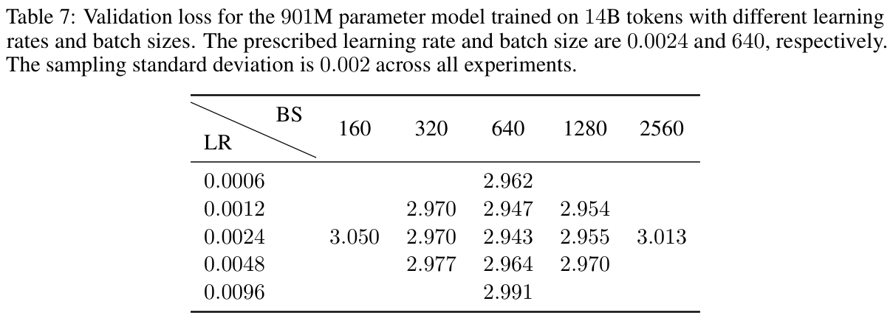
（承上页）展示原始 IsoFLOP 曲线（如图 10），以及估计的理想调参损失。
- 重新拟合 scaling law。为估计理想调参对计算最优指数 \(a\) 估计的影响，对上述更新的 IsoFLOP 曲线应用附录 D 的“bootstrap”拟合流程。拟合时仅使用 \(\{2^k\cdot1.25\mathrm{e}16\}_{k=0}^7\) 的 FLOP 值。对于 \(k>7\)，没有数据估计理想调参下的损失。
结论。图 17 左上表明，对大于 15M 的模型及大于 10 的 \(\rho\)，所选超参数的损失与最优值相差不超过 \(1\mathrm{e}{-2}\)。对于更小模型或 \(\rho\)，理想调参的潜在损失改善更大，右上图也清楚显示这一点。但右上图还表明，损失降低并未使计算最优模型规模（IsoFLOP 曲线上的星号）明显移动。底图进一步显示，多数 FLOP 值下，计算最优模型规模差异处于其估计标准差以内。它还表明，近似理想调参使计算最优指数估计变化小于 0.032，且进一步远离 Kaplan 等的指数。此外，学习率和 batch size 敏感性随模型增大而下降，因此预期理想调参在更大计算预算下影响更小；若将更大模型纳入理想调参估计（也需要将超参数扫描扩展到更大模型），\(a\) 很可能更一致。事实上，在幂律拟合中去掉最小的两个 FLOP 值（即使用 \(\{2^k\cdot1.25\mathrm{e}16\}_{k=2}^7\)），原始观察得到 \(a=0.489\)，理想调参得到 \(a=0.5\)。总体上，估计理想调参与基于 scaling law 的超参数选择会产生类似结果。
G.5 在更大计算规模上验证超参数 scaling laws
将最大模型（901M 参数）的训练延长至约 14B RefinedWeb token（根据 scaling law，这是该模型规模的计算最优值），检验预测的 batch size 与学习率在此规模是否最优。具体而言，将表 4 给出的学习率与 batch size（分别为 0.0024 和 640）与 12 种配置比较。其中 8 种改变学习率或 batch size 之一，另外 4 种同时改变两者。使用留出的 RefinedWeb 数据评估，并按附录 D 计算验证损失及抽样标准差。结果见表 7。发现所给学习率和 batch size 确实最优，因为它们得到最低验证损失。
H 复现 Kaplan 等调整后的 scaling law
图 18 表明，重新引入第 3.1 至 3.3 节的 FLOP 统计和过长 warmup 问题，但使用优化过的超参数训练，即可恢复 Kaplan 等 [30] 计算最优 scaling law 的“调整后”形式 \(1.3\mathrm{e}9\cdot(C/8.64\mathrm{e}19)^{0.73}\)。Kaplan 等 [30] 通过理论补偿小模型使用过大 batch size 的事实，推导这一规律。令人安心的是，当加入已识别的其他问题，但通过调参适当减小 batch size 时，确实与调整后规律非常一致。
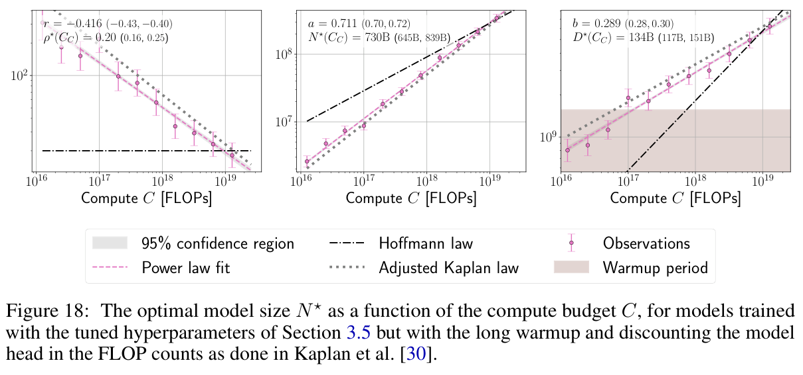
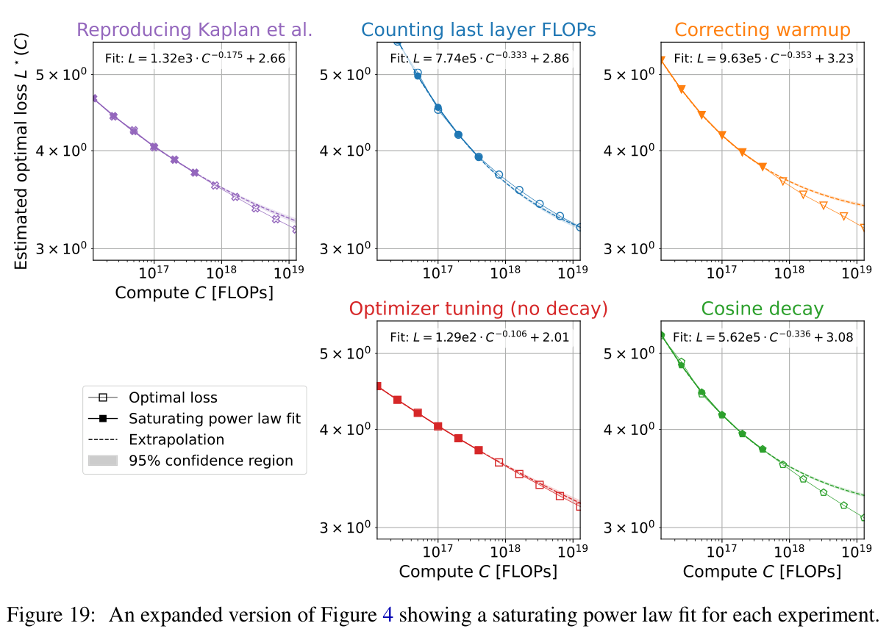
I 计算最优损失
扩展图 4。图 19 为每次实验的计算最优损失曲线拟合饱和幂律 \(L(C)=E+L_0C^{-\ell}\)。如图所示，仅调过超参数的实验具有预测性。拟合方式类似 Hoffmann 等 [25]：对 \(\ell,\log(E),\log(L_0)\) 最小化 \(\log L(C)\) 的 Huber 预测损失。
OpenWebText2 上的结果。在 OpenWebText2 上开展相同分析。图 20 展示该数据集计算最优损失曲线的饱和幂律拟合，图 21 展示图 5 的 OpenWebText2 版本。损失 scaling law 对 OpenWebText2 也具有预测性。
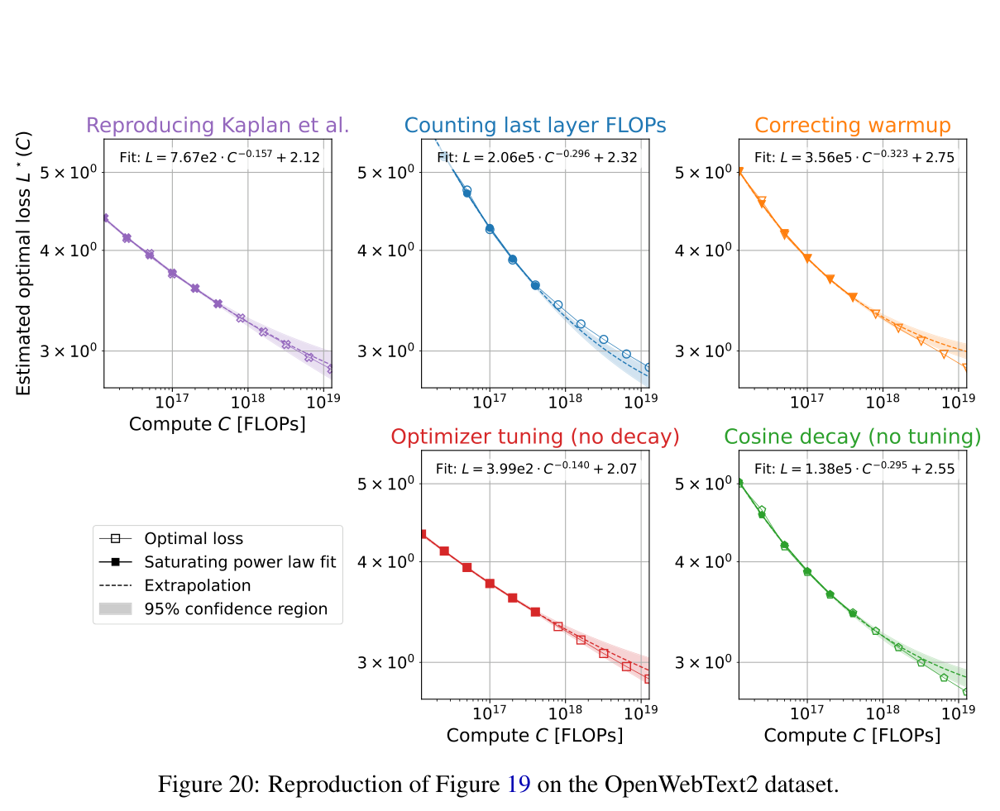
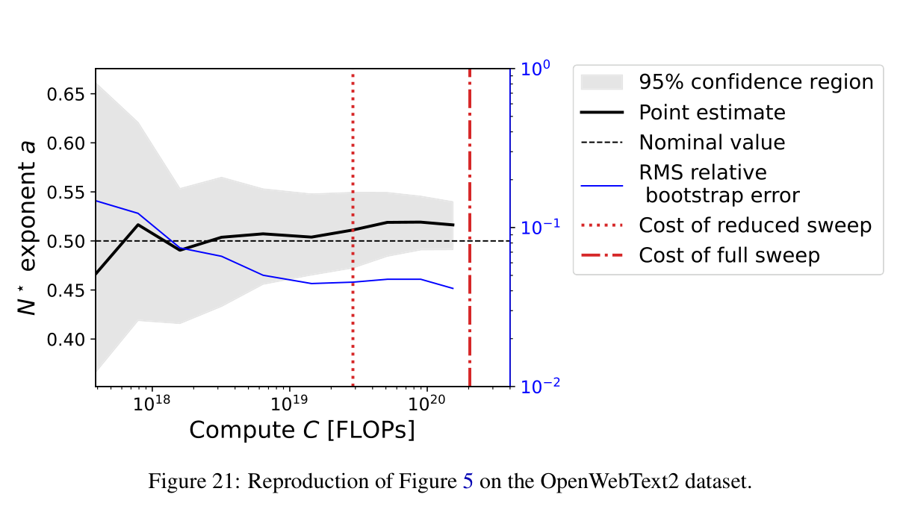
J 实验的计算成本
现在讨论每个主要实验的成本计算，比较固定学习率调度（恒定，或 Kaplan 等 [30] 使用的固定长度余弦）与分别定制的余弦调度。每次实验均直接估计一组 \(C\) 值上的 \(N^\star(C)\)，网格为 \(C_k=2^k\cdot1.25\mathrm{e}16\) FLOPs，\(k\) 从 0 到 \(K=11\)。使用余弦学习率调度时，每个 \(C\) 值需要不同训练运行，因此实验成本为 \(\sum_{k=0}^Km_kC_k\)，其中 \(m_k\) 是训练 \(C_k\) FLOPs 的模型数量，在我们实验中介于 6 和 7。恒定学习率能节省计算，因为可从同次运行提取不同 FLOP 值的性能，因此成本为 \(\sum_{k=0}^Km'_kC_k\)，其中 \(m'_k\) 是最多训练 \(C_k\) FLOPs 的模型数量。在最大预算处，\(m'_K=m_K\)，介于 6 和 7；但对所有较小的 \(k